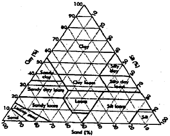
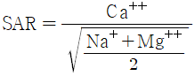
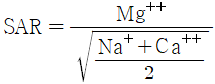
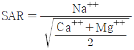
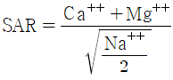
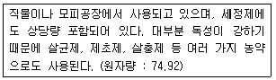
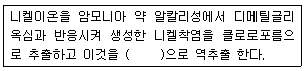
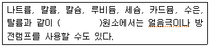

토양환경기사 (2005-09-04 기출문제)
1과목: 토양학개론
1. 토양의 수직단면의 성층구조 중 B층에 관한 설명과 가장 거리가 먼 것은?
- 풍화작용이 가장 활발하게 진행되고 있는 층이다.
- 풍화작용에 의하여 토양 구조의 구분이 없는 것이 특징이다.
- 습윤한 기후에서는 칼슘과 같은 가용성 양이온이 종종 용탈된다.
- 건조한 기후에서는 탄산칼슘 및 그 밖의 가용성 염류가 집적된다.
(정답률: 알수없음)

2. 토양오염물질의 이동특성, 이동경로에 영향을 주는 유기오염물질의 주요 특성(인자)과 가장 거리가 먼 것은?
- 증기압
- 용해도적
- 분해상수
- 헨리상수
(정답률: 알수없음)
3. 호기성 미생물이 필요로 하는 전자수용체는?
- 질소(N2)
- 물(H2O)
- 산소(O2)
- 이산화탄소(CO2)
(정답률: 알수없음)
4. 어느 지역 토양의 공극률(porosity) 측정을 위해 토양 60cm3을 채취하여 고형입자 부피와 수분 부피를 측정하였더니 각각 42cm3와 12cm3였다. 이 지역 토양의 공극률(%)은?
- 10
- 20
- 30
- 70
(정답률: 알수없음)
5. 비위생 매립장에 위치한 폐기물을 수거한 후 토양조사를 실시하여 보니, 크롬(6+)농도가 12mg/kg 이었고 이 농도에 해당하는 토양의 용량은 1000 ton 이었다. 처리해야 할 크롬(6+)의 물량(kg)은?
- 10
- 12
- 16
- 19
(정답률: 알수없음)
6. 다음 이온들의 이온 교환 효율이 큰 순서(큰＞작은)로 된 것은?
- Mg＞K＞Li＞Na
- Mg＞K＞Na＞Li
- Mg＞Na＞K＞Ki
- Mg＞Na＞Li＞K
(정답률: 알수없음)
7. 토양에서 염기포화도(%)의 식으로 가장 옳은 것은?
- (교환성 염기의 meq/교환성 양이온 meq)×100
- (교환성 염기의 meq/교환성 음이온 meq)×100
- (교환성 양이온 meq/교환성 염기의 meq)×100
- (교환성 음이온 meq/교환성 염기의 meq)×100
(정답률: 알수없음)
8. 토양오염의 특징과 가장 거리가 먼 것은?
- 오염경로의 다양성
- 피해발현의 완만성
- 오염영향의 광역성
- 오염의 비인지성
(정답률: 알수없음)
9. 토양생성작용중 배수가 불량한 곳이나 지하수위가 높은 저습지에서 산소의 공급이 불충분하여 토양이 환원상태가 되었을 때 Fe+3이 Fe+2으로 환원되어 표층의 색깔이 담청색 내지 녹청색 또는 청회색을 띠는데 이러한 토층의 분화작용을 무엇이라 하는가?
- podzol화작용
- laterrite화작용
- glei화작용
- 석회화작용
(정답률: 알수없음)
10. 어느지역의 토양을 입자분석을 해보았더니 모래(sand) 50%, 미사(silt) 30%, 점토(clay) 20%로 이루어져 있다면 다음의 주어진 토양분류도에 의하면 이지역의 토양분류는?

- Clay
- Loam
- Clay loam
- Silty clay loam
(정답률: 알수없음)
11. TPH가 0.5 g/kg으로 오염된 토양 100g과 1.0 g/kg으로 오염된 토양 200g을 혼합하였다. 최종 혼합농도는?
- 약 830 mg/kg
- 약 850 mg/kg
- 약 870 mg/kg
- 약 890 mg/kg
(정답률: 알수없음)
12. 토양오염개연성을 판단하는 1단계 부지환경평가의 내용과 가장 거리가 먼 것은? (단. 미국품질검사규격협외의 토양오염도조사 기준)
- 자료평가
- 관계자면담
- 현장조사
- 서류검토
(정답률: 알수없음)
13. 토양의 CEC에 대한 설명 중 틀린 것은?
- 일정량의 토양교질이 보유할 수 있는 교환성 양이온의 총량을 말한다.
- 토양의 CEC는 토양교질입자의 양전하의 크기에 달려있다.
- CEC는 건조토양 100g당 흡착된 교환가능성 양이온의 밀리그램당량(meq)으로 나타낸다.
- 자연토양의 경우 여러 가지 점토광물의 혼합물로서 그 CEC는 대략 50meq 정도이다.
(정답률: 알수없음)
14. 토양목 구분중 “Entisol"에 관한 설명으로 알맞은 것은?
- 유기질로 이루어진 늪지의 토양
- 유기물함량이 높은 표토가 검은 빛깔의 토양
- 화산재토양
- 토양층위가 뚜렷하지 않은 미발달 토양
(정답률: 알수없음)
15. 토양의 나트륨의 흡착비(SAR)식을 올바르게 나타낸 식은?




(정답률: 알수없음)
16. 다음 점토광물(clay minerals)중 2:1 구조를 가진 것은?
- 카올리나이트(kaolinite)
- 지올라이트(zeolite)
- 몬모릴로나이트(montmorillonite)
- 클로라이트(chlorite)
(정답률: 알수없음)
17. 토양기공에 관한 설명 중 틀린 것은?
- 상대습도는 대기보다 높다.
- 탄산가스의 함량은 대기보다 높다.
- 산소의 함량은 대기보다 낮다.
- 아르곤의 함량은 대기보다 낮다.
(정답률: 알수없음)
18. 다음 설명에 해당하는 토양오염물질은?

- 카드뮴
- 비소
- 시안
- 유기인
(정답률: 알수없음)
19. 토양수분장력이 pF4라면 이물 물기둥의 압력으로 환산한 값으로 가장 적절한 것은?
- 약 1기압
- 약 4기압
- 약 10기압
- 약 40기압
(정답률: 알수없음)
20. 포화대의 수리지질학적인 특성은 지하수흐름특성과 저유특성으로 구별될 수 있다. 저유특성 인자와 가장 거리가 먼 것은?
- 공극률
- 수리전도도
- 비저유계수
- 비산출률
(정답률: 알수없음)
2과목: 토양 및 지하수 오염조사기술
21. 석유계총탄화수소(TPH)의 분석에서 검량선 작성을 위해 사용하는 표준물질의 짝수의 노말알칸 범위는?
- C8~C40
- C2~C30
- C10~C60
- C4~C30
(정답률: 알수없음)
22. 토양오염공정시험방법에 대한 내용 중에서 틀린 것은?
- 십억분율은 μℓ/ℓ로 표시할 수 있으며 ppb의 1/1000이다.
- “정확히 단다”라 함은 규정된 양의 검체를 취하여 분석용 저울로 0.1mg까지 다는 것을 의미한다.
- “정확이 취하여”라 함은 규정한 양의 검체 또는 시액을 홀피펫으로 눈금까지 취하는 것을 말한다.
- 냉수는 15℃이하로 한다.
(정답률: 알수없음)
23. 0.0008N의 NaOH 용액의 pH는 얼마인가?
- 10.1
- 10.6
- 10.9
- 11.2
(정답률: 알수없음)
24. 흡광광도법에 의한 카드뮴을 분석하는데 대한 설명 중 옳지 않은 것은?
- 카드뮴이온은 시안화칼륨이 존재하는 알칼리성조건에서 디티존과 반응시켜 카드뮴 착염을 형성한다.
- 정량범위는 0.001-0.3mg이고 표준편차율은 3-10%이다.
- 추출된 카드뮴착염은 주석산용액을 이용하여 역추출한다.
- 청색의 카드뮴착염을 사염화탄소로 추출하여 흡광도를 측정한다.
(정답률: 알수없음)
25. 압력을 이용한 누출여부 측정의 오류원인에 대한 예로 부적절한 것은? (단, 가압시험법, 저장물질이 없는 지하매설저장시설 기준)
- 최고 설정압력의 오류
- 시험압력 유지시간이 너무 길 때
- 측정시간 동안 온도 변화에 의한 내용물의 체적변화
- 지하매설저장시설 이외의 연결관 및 연결부의 누출
(정답률: 알수없음)
26. 가스크로마토그래피의 검출기 중 인 또는 유황화합물을 선택적으로 검출할 수 있으며 운반가스와 조연가스의 혼합부, 수소공급부, 연소노즐, 광학필타, 광정자증배관 및 전원 등으로 구성되어 있는 것은?
- 수소이온화 검출기
- 불꽃광도형 검출기
- 전자포획형 검출기
- 알칼리열 이온화검출기
(정답률: 알수없음)
27. 저장물질이 있는 지하매설저장시설의 기상부 시험법에서 미감압시험법의 판정기준과 관련 없는 사항은?
- G값
- T값
- P값
- S값
(정답률: 알수없음)
28. 이온 전극법을 이용하여 측정하기에 가장 적합한 성분은?
- 시안
- 수은
- 트리클로로에틸렌
- 폴리클로리네이티드비페닐
(정답률: 알수없음)
29. 저장물질이 있는 지하매설저장시설을 미가압시험법을 이용하여 누출시험 할 경우 주의 할 사항으로 옳지 않은 것은?
- 드롭파이프의 지름은 밸브측 배관지름보다 작게 함
- 시험종료 후 가스방출은 안전한 장소로 방출되도록 함
- 가압장치는 300mmH2O 이상의 압력이 가해지지 않도록 안전장치를 설치함
- 안전장치는 수증드롭 방식으로 함
(정답률: 알수없음)
30. 지하매설저장시설에 사용되는 용어 정의로 적절하지 않는 것은?
- 부속배관 : 지하매설저장시설에 용접 또는 나사조임 방식으로 직접 연결되는 배관
- 지하매설배관 : 부속배관의 경로 중 지하에 매설되어 누출 여부를 육안으로 직접 확인할 수 없는 배관
- 배관접속부 : 지하매설저장시설과 부속배관, 부속배관과 배관을 연결하기 위하여 용접접합 또는 나사조임방식 등으로 접속한 부분
- 누출검지관 : 기체의 누출여부를 지하매설저장시설 내부에서 직접 확인하기 위해 설치된 관
(정답률: 알수없음)
31. 흡광광도법에 의한 니켈의 측정원리에 관한 내용이다. ( )안에 알맞은 내용은?

- 묽은염산
- 암모니아
- 사염화탄소
- 에틸알코올
(정답률: 알수없음)
32. 니켈, 아연 등 중금속 전함량 분석대상 물질의 시험용 시료조제를 위한 체걸음 기준으로 가장 적절한 것은?
- 눈금간격 2mm(200메쉬)
- 눈금간격 2mm(100메쉬)
- 눈금간격 0.15mm(200메쉬)
- 눈금간격 0.15mm(100메쉬)
(정답률: 알수없음)
33. 투과 퍼센트가 30% 일 경우 흡광도는?
- 0.522
- 0.477
- 0.326
- 0.155
(정답률: 알수없음)
34. 불소 분석 방법에 관한 설명 중 틀린 것은? (단, 흡광광도법 기준)
- 다량의 염소이온이 함유되어 있을 경우 과량의 Ag+이온을 첨가한다.
- 유효측정농도는 0.2mg/kg 이상으로 한다.
- 불소이온과 지르코니움(zirconium)이온 사이의 반응속도는 반응혼합물의 산도에 따라 달라진다.
- 지르코니움(zirconium)-발색 시약과의 반응으로 진홍색의 음이온 복합체(ZrF62-)를 형성한다.
(정답률: 알수없음)
35. 일반지역에서 시료채취지점 선정방법이 잘못된 경우는?
- 농경지의 토양시료 중에 카드뮴을 측정하기 위해 시료를 채취할 경우 대상지역 내에서 지그재그형으로 5-10개 지점을 선정한다.
- 공장지역의 토양시료 중에 카드뮴을 측정하기 위해 시료를 채취할 경우 대상지역의 중심이 되는 1개 지점과 주변 4방위의 5-10m 거리에 있는 1개 지점씩 총 5개 지점을 선정한다.
- 농경지의 토양시료 중에 석유계층탄화수소를 측정할 경우 대상지역 내에서 대표치를 구할 수 있는 1개 지점을 선정한다.
- 공장지역의 토양시료 중에 BTEX를 측정할 경우 대상지역의 중심이 되는 1개 지점과 주변 4반위의 5-10m 거리에 있는 1개 지정씩 총 5개 지점을 선정한다.
(정답률: 알수없음)
36. 원자흡광 분석 장치중 램프에 관한 내용이다. ( )안에 알맞은 내용은?

- 비점(沸點)이 낮은
- 비점(沸點)이 높은
- 극성(極性)이 낮은
- 극성(極性)이 높은
(정답률: 알수없음)
37. 토양오염공정시험방법상 토양시료 중 페놀류의 시험법에 대한 설명 중 잘못된 것은?
- 토양에서 페놀류의 추출은 아세톤/노말헥산(1:1)을 이용한다.
- 60-65℃의 수욕조에서 K. D. 장치를 사용한 농축법을 활용한다.
- 페놀류 추출시 무수황산나트륨을 첨가하여 극성을 최소화한다.
- 측정장비로 가스크로마토그래프-불꽃이온화검출기를 활용한다.
(정답률: 알수없음)
38. 분석항목과 기기분석 방법이 잘못 짝지어 있는 것은?
- 흡광광도법 - 유기인
- 원자흡광광도법 - 수은
- 유도결합플라즈마발광광도법 - 납
- 가스크로마토그래피 - PCB
(정답률: 알수없음)
39. TCE를 가스크로마토그래피법으로 정향화 할 때의 설명으로 바르지 않은 것은?
- 유효측정농도를 0.1mg/kg 이상으로 한다.
- 불꽃이온화검출기(FID)가 주로 사용된다.
- 내부표준액으로 플루오르벤젠을 사용한다.
- 시료중의 TCE을 메틸알코올로 추출하여 검액을 제조한다.
(정답률: 알수없음)
40. BTEX 분석을 위하여 시험관에 채취된 시료를 측시 실험할 수 없는 경우의 시료 보존 기한기준으로 알맞은 것은?
- 0 -4℃ 냉암소에서 보존하고 14일 이내 분석
- 0 -4℃ 냉암소에서 보존하고 7일 이내 분석
- 염산으로 pH 2이하로 보존하고 14일 이내 분석
- 염산으로 pH 2이하로 보존하고 7일 이내 분석
(정답률: 알수없음)
3과목: 토양 및 지하수 오염정화 기술
41. 수직방벽을 이용한 오염지하수 제어방법 중 슬러리월의 장단점으로 틀린 것은?
- 시공방법이 간단하다.
- 시간경과에 따라 벤토나이트(광물) 특성이 저하된다.
- 지하수위 강하에 따른 주변지역의 영향이 적다.
- 암석층의 경우 자갈로 인하여 과도 굴착이 필요하다.
(정답률: 알수없음)
42. 오염물질의 특성중 토양증기추출 시스템 처리효율에 영향을 미치는 주요인자와 가장 거리가 먼 것은?
- 용해도
- 수분함량
- 헨리상수
- 흡착계수
(정답률: 알수없음)
43. 다음은 오염된 토양을 세척기법으로 정화처리하는 토양세척기법의 작업절차에 대한 것인데 가장 바르게 나타낸 것은?
- 토사굴착-토사입자분리-토사전처리-조립자처리-세립자처리-오염수처리-잔류물처리
- 토사굴착-토사전처리-토사입자분리-조립자처리-세립자처리-오염수처리-잔류물처리
- 토사굴착-토사전처리-조립자처리-세립자처리-토자입자분리-오염수처리-잔류물처리
- 토사굴착-토사전처리-오염수처리-토사입자분리-조립자처리-세립자처리-잔류물처리
(정답률: 알수없음)
44. 오염토양의 불용화를 위한 화학적 처리에 적용되는 오염물질과 그 처리물질을 바르게 짝지어진 것은?
- 차아염소나트륨(NaOCl) - 시안화합물
- 염화철(FeCl2) - 6가 크롬
- 황산철(FeSO4) - 비소화합물
- 불화수소(HF) - 구리화합물
(정답률: 알수없음)
45. 유기화학물질의 생분해능은 화합물의 분자구조에 크게 의존한다. 다음 조건중 대상 오염물질이 난분해성 경향을 갖게 하는 것은?
- 할로겐화된 화합물
- 가지구조가 작은 화합물
- 물에 대한 용해도가 높은 화합물
- 원자의 전하차가 작은 화합물
(정답률: 알수없음)
46. 4.5m3 용량의 지하저장탱크를 제거하였다. 저장탱크가 제거된 탱크 박스 규모는 4m × 4m × 5m(L×W×H)이며 박스 내 오염토양을 시료로 채취하여 TPH 농도를 분석한 결과, 평균농도가 3,200 mg/kg 이 검출되었다. 이 오염토양 내 존재하는 TPH는 몇 리터인가? (단, 오염토양 밀도 = 1.8g/cm3, TPH 비중 = 0.8)
- 약 512L
- 약 532L
- 약 544L
- 약 568L
(정답률: 알수없음)
47. 주유소의 가솔린 저장탱크에서 가솔린이 누출되어 탱크주변 토양을 오염시켰다. 오염토양은 대부분 사질과 미사질 토양이고, 오염면적은 약 100m2이며, 오염토양 공극의 약 0.1%를 가솔린이 채우고 있다.오염지역의 지하수면은 지표면으로부터 깊이 약 4m이고, 오염물은 지하수면상부에 존재하고 있다. 다음 보기에 제시된 복원방법 중에서 주유소 주변 오염토양을 복원하기 위해 가장 저렴하고 제거 효과가 좋은 방법은?
- 토양열탈착법
- 토양유리화방법
- 토양증기추출법
- 토양시멘트고형화
(정답률: 알수없음)
48. 토양세척법의 처리효율에 대해 바르게 설명된 것은?
- 휘발성이 높은 오염물질의 처리효율이 높다.
- 토양입자의 크기가 작으면 처리효율이 높다.
- 토양내 부식물질의 양이 많으면 처리효율이 높다.
- 세척액의 pH가 중성일수록 처리효율이 증가된다.
(정답률: 알수없음)
49. 어느 화학공장의 오염된 지하수를 700m3/day 규모로 펌핑하여 호기성 생물처리법으로 처리하고자 한다. 지하수의 수질을 분석한 결과 다음과 같을 때 1일 필요한 요소의 주입량은? (단, 미생물활성을 위한 영양비는 BOD:N:P = 100:5:1로 가정한다. 지하수의 수질은 pH7.5, 인산 50mg/L, BOD 1.000 mg/L, 총질소 0, 요소 분자식은[(NH2)2CO)]
- 55kg
- 65kg
- 75kg
- 85kg
(정답률: 알수없음)
50. 지하수로 포화된 오염토양(포화대)에 공기를 주입시켜 휘발성 오염물질을 추출 처리하는 기술은?
- 공기스파징(air sparging)
- 바이오벤팅(bioventing)
- 토양세척(soil flushing)
- 토양증기추출(soil vapor extraction)
(정답률: 알수없음)
51. 휘발성 유기오염물질 처리를 위한 바이오필터공법의 운전상 문제점과 가장 거리가 먼 것은?
- 수분증발
- 충전층의 막힘현상
- pH 저하
- 처리수 발생
(정답률: 알수없음)
52. 토양오염에 대한 건강위해성평가 과정 중 가장 마지막 단계에 해당되는 것은?
- 노출평가
- 유해성인식
- 위해의 특성화
- 독성평가
(정답률: 알수없음)
53. 투수성 반응벽체를 활용한 정화기술에서 반응벽에 적용되는 반응성 물질과 가장 거리가 먼 것은?
- Fe0
- 석회
- 미생물복합체
- 석영분말
(정답률: 알수없음)
54. 다음의 미생물 반응 중에서 산화-환원반응으로 얻게 되는 에너지 크기가 가장 적은 것은?
- 호기성 호흡
- 질산화
- 질산염 환원
- 메탄발효
(정답률: 알수없음)
55. 다음 중 복원기술 중 물리화학적 복원기술과 가장 거리가 먼 것은?
- 토양증기추출법
- 토양세정법(Soil-Flushing)
- 토양경작법
- Air-Sparging
(정답률: 알수없음)
56. 처리된 폐기물의 위해성평가를 위한 용출능 평가실험 중 인조 산성 강우액을 이용하여 물체로부터 연속적으로 오염물을 추출하여 pH 변화에 따른 영향을 나타낼 수 있는 방법은?
- MWEP 실험법
- MEP 실험법
- MCC-IP 실험법
- CLT 실험법
(정답률: 알수없음)
57. 100m 직경의 지하수 관측정을 설치하기 위해 4군데 지점에 250mm 직경으로 심도 17m 까지 보링하였다. 보링 후 관측정을 삽입하고 지표로부터 1.5m 깊이까지만 벤토나이트를 넣어 마감처리를 하였다면 소요되는 벤토나이트의양은 얼마인가? (단, 벤토나이트 밀도 = 1.8g/cm3, 안전율 = 1.1)
- 약 260kg
- 약 370kg
- 약 480kg
- 약 590kg
(정답률: 알수없음)
58. 고온열탈착 공법에 관한 내용과 가장 거리가 먼 것은?
- 주된 처리대상오염물질은 준휘발성유기물질, PCBs, 살충제 등이다.
- 점토와 실트질 토양, 높은 유기물을 함유한 토양은 오염물질과의 결함으로 반응시간을 증가시킨다.
- 적절한 토양함수비를 맞추기 위한 가수분해과정이 필요하다.
- 방사능물질이나 독성물질로 오염된 토양으로부터 오염물질을 분리하는데 적용할 수 있다.
(정답률: 알수없음)
59. 동전기 정화시 발생되는 동전기 현상 중 “전기경사에 의한 전하를 띤 입자의 이동”으로 정의되는 것은?
- 전기상투
- 전기영동
- 전기이동
- 전기전동
(정답률: 알수없음)
60. 토양증기추출법의 설계적용인자 기준에 대한 설명 중 맞는 것은?
- 오염부지의 공기투과계수는 0.001cm/sec 이상이어야 한다.
- 오염물질의 헨리상수(무차원) 값이 0.01 이상이어야 한다.
- 오염물질의 증기압은 10mmHg 이상이어야 한다.
- 오염물질의 물에 대한 용해도는 100mg/L 이상이어야 한다.
(정답률: 알수없음)
4과목: 토양 및 지하수 환경관계법규
61. 시ㆍ도지사 또는 시장, 군수, 구청장이 토양정밀조사결과 우려기준을 넘는 경우에 기간을 정하여 오염원인자에게 조치할 수 있는 명형과 가장 거리가 먼 것은?
- 당해 토양오염물질의 사용중지
- 토양오염관리대상시설의 이전
- 토양오염유발시설의 폐쇄조치
- 오염토양의 정화
(정답률: 알수없음)
62. 토양오염조사기관의 업무가 아닌 것은?
- 토양정밀조사
- 토양환경평가
- 토양오염도검사
- 토양누출검사
(정답률: 알수없음)
63. 토양환경보전법 규정에 의한 토양정밀조사의 방법 선정시 고려해야 할 사항과 가장 거리가 먼 것은?
- 토양오염의 정도
- 토양의 이용현황
- 토양의 종류별 분류
- 오염물질의 특성
(정답률: 알수없음)
64. 토양오염조사기관의 시설(실험실)에 지정기준으로 알맞은 것은?
- 150제곱미터 이상
- 180제곱미터 이상
- 210제곱미터 이상
- 250제곱미터 이상
(정답률: 알수없음)
65. 다음 중 특정토양오염관리대상시설에 대한 사용중지 명령을 이행하지 아니한 자에 대한 벌칙기준으로 맞는 것은?
- 3년이하의 징역 또는 2천만원 이하의 벌금
- 2년이하의 징역 또는 1천만원 이하의 벌금
- 1년이하의 징역 또는 500만원 이하의 벌금
- 6월이하의 징역 또는 300만원 이하의 벌금
(정답률: 알수없음)
66. 다음 중 토양오염 대책 기준을 적용함에 있어 ‘나’ 지역 기준이 적용되어야 하는 지목은?
- 잡종지
- 임야
- 유원지
- 학교용지
(정답률: 알수없음)
67. 지하수수질오염을 측정하기 위하여 측정망을 설치하는데 측정망 설치계획에 포함되어야 하는 항목과 가장 거리가 먼 것은?
- 수질측정소를 설치할 토지 또는 시설물의 위치
- 수질측정망 배치도
- 수질측정망 설치시기
- 수질측정 항목 및 기준
(정답률: 알수없음)
68. 토양오염우려기준 중 ‘가’ 지역에서의 카드뮴에 대한 기준으로 알맞은 것은? (단, 단위 mg/kg)
- 0.5
- 1.5
- 4
- 12
(정답률: 알수없음)
69. 다음 중 특정토양오염관리대상시설 부지내 또는 주변지역에서 토양오염검사를 위한 시료채취 방법 중 잘못된 것은?
- 주변지역에서의 시료채취는 주변지역 내에서 2개 지점을 선정하여 시료를 채취
- 부지내 개별 저장시설 용량이 50만리터를 초과하는 경우, 개별 저장시설별로 2개 지점에서 시료채취
- 부지내 저장시설 용량이 50만리터 이하인 저장시설이 1개 이상 있는 경우에는 2개 지점에서 시료채취. 다만, 개별 저장시설간의 거리가 100미터 이상 떨어진 경우에는 2개 지점을 추가하여 시료채취
- 부지내 50만리터 초과시설과 그 미만인 시설이 혼재되어 있는 경우, 50만리터 초과시설은 개별 저장시설별로 각각 2개 지점에서 시료를 채취하고, 나머지 50만 리터 미만 저장시설은 그 용량합계가 50만리터를 초과하는 경우에 한하여 누출우려가 높은 저장시설에서 2개 지점을 추가하여 시료채취
(정답률: 알수없음)
70. 다음 중 토양환경 보전법에 의거 지정된 토양보전대책지역해제, 변경요건과 가장 거리가 먼 것은?
- 대책계획의 수립, 시행으로 토양오염의 정도가 우려기준 이내로 개선된 경우
- 토양오염물질의 종류가 바뀐 경우
- 공익상 불가피한 경우
- 천재ㆍ지변 기타의 사유로 인하여 대책지역으로서의 지정목적을 상실한 경우
(정답률: 알수없음)
71. 특정토양오염관리대상시설을 설치신고하고자 하는 자가 특정토양오염관리대상시설설치신고서에 첨부하여 시장, 군수, 구청장에게 제출하여야 하는 서류와 가장 거리가 먼 것은?
- 특정토양오염관리대상시설의 설치내역서 및 도면
- 토양오염물질의 명칭ㆍ저장용량 및 농도들에 관한 내역서
- 토양오염도조사를 위한 특정토양오염조사계획서
- 특정토양오염관리대상시설의 주변지형, 피해우려 예상 지역 및 측정예정지점을 표시한 도면
(정답률: 알수없음)
72. 시장, 군수, 구청장이 오염토양개선사업의 전부 또는 일부의 실시를 그 오염원인자에게 명할 수 있다. 이 경우 실시명령을 이행하지 아니한 자 또는 실시명령을 받고 승인을 얻지 아니하고 오염토양개선사업을 실시한 자는 어떤 벌칙을 받는가?
- 5년이하 징역 또는 3천만원 이하 벌금
- 3년이하 징역 또는 2천만원 이하 벌금
- 2년이하 징역 또는 1천만원 이하 벌금
- 1년이하 징역 또는 5백만원 이하 벌금
(정답률: 알수없음)
73. 환경부장관 또는 시ㆍ도지사 또는 시장, 군수, 구청장은 토양보전을 위하여 필요하다고 인정하는 경우에는 토양정밀조사를 실시할 수 있는데 정밀조사 대상이 되는 지역과 가장 거리가 먼 것은?
- 토양측정망 운영(상시측정)결과 우려기준을 넘는 지역
- 토양오염실태조사 결과 우려기준을 넘는 지역
- 특정토양오염유발시설이 설치되어 우려기준을 넘을 가능성이 크다고 인정되는 지역
- 토양오염사고 등으로 인하여 환경부장관 또는 시ㆍ도지사 또는 시장, 군수, 구청장이 우려기준을 넘을 가능성이 크다고 인정하는 지역
(정답률: 알수없음)
74. 다음 중 토양관련전문기관인 토양오염조사기관이 아닌 것은?
- 시, 도 보건환경연구원
- 국립환경연구원
- 농촌진흥청소속 농업환경연구원
- 산림청소속 국립산림과학원
(정답률: 알수없음)
75. 누출검사를 받아야 하는 기준으로 적절한 것은?
- 토양오염우려기준 가 지역 적용기준의 40%이상
- 토양오염우려기준 나 지역 적용기준의 40%이상
- 토양오염대책기준 가 지역 적용기준의 40%이상
- 토양오염대책기준 나 지역 적용기준의 40%이상
(정답률: 알수없음)
76. 다음 중 지하수의 수질기준 설정 항목에 해당하지 않는 것은? (단, 지하수를 생활용수로 사용하는 경우)
- 구리
- 질산성질소
- 염소이온
- 벤젠
(정답률: 알수없음)
77. 토양보전대책지역 지정 표지판에 표시되는 내용과 가장 거리가 먼 것은?
- 토양보전대책지역 지정목적
- 토양보전대책지역 지정사유
- 토양보전대책지역 내역
- 토양보전대책지역안에서 제한되는 행위
(정답률: 알수없음)
78. 다음 중 지하수오염유발시설의 설치자 또는 관리자가 지하수오염방지를 위하여 조치하여야 할 사항과 가장 거리가 먼 것은?
- 지하수어염물질 누출방지시설의 설치 및 누출여부를 확인할 수 있는 시설의 설치
- 지하수오염유발시설의 상ㆍ하류구간에 대한 지하수 오염관측정의 설치
- 지하수 수질의 정기적 측정 및 시장ㆍ군수에 대한 수질측정결과의 보고
- 지하수오염물질으 운송ㆍ저장ㆍ처리방식등의 규정 수립 및 보고
(정답률: 알수없음)
79. 지하수의 수질기준상 공업용수로 사용되는 지하수에서 검출되어서는 안되는 오염물질항목은?
- 유기인
- 비소
- 카드뮴
- 시안
(정답률: 알수없음)
80. 지하수 조사 시 수문지질도 작성 항목에 포함되지 않는 것은?
- 지하수의 수량 및 오염도
- 지하수의 수질특성
- 지하수를 함유하고 있는 지층의 구조와 수리적 특성
- 지하수의 개발가능성
(정답률: 알수없음)
B층은 토양의 수직단면에서 중간에 위치한 층으로, 다른 층들과 구분되는 특징을 가지고 있습니다. 따라서 B층에 대한 설명은 다른 층들과의 차이점을 중심으로 이루어져야 합니다.
"풍화작용이 가장 활발하게 진행되고 있는 층이다."는 B층의 특징 중 하나이지만, 다른 층들과의 차이점을 강조하는 것은 아닙니다. 따라서 이 설명은 가장 거리가 먼 것입니다.
반면에 "풍화작용에 의하여 토양 구조의 구분이 없는 것이 특징이다."는 B층의 가장 중요한 특징 중 하나입니다. 다른 층들과는 구분되지 않는 특징이기 때문에 B층에 대한 설명으로 가장 적절합니다.
"습윤한 기후에서는 칼슘과 같은 가용성 양이온이 종종 용탈된다."와 "건조한 기후에서는 탄산칼슘 및 그 밖의 가용성 염류가 집적된다."는 기후에 따라 B층의 성질이 달라지는 것을 설명하는 것이므로, B층에 대한 설명으로는 적절하지 않습니다.